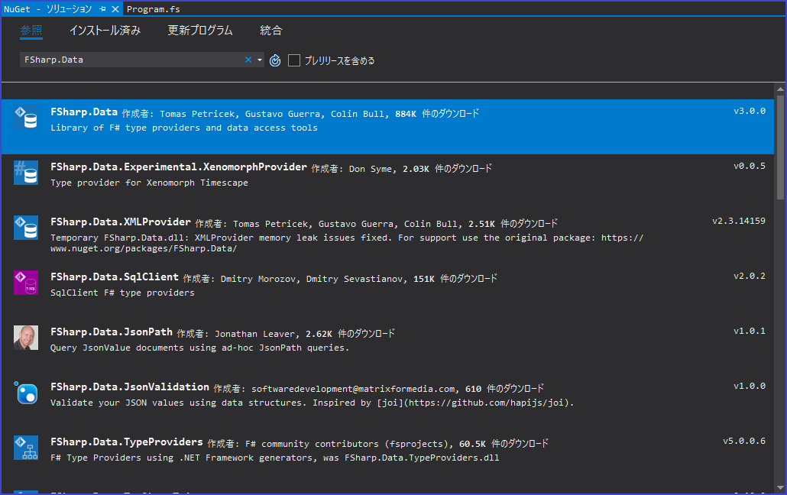
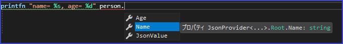
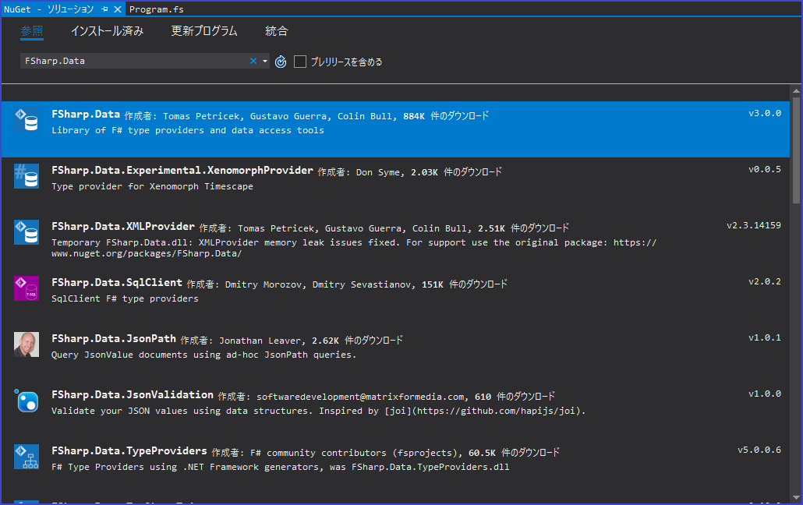
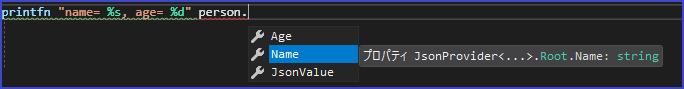

型プロバイダの概要
型プロバイダ(= Type provider)は、F#の機能の中でも特筆すべき機能の一つです。これは、プログラムで使用するための型・プロパティ・メソッドを提供するコンポーネントです。型プロバイダは、F#コンパイラによって生成され、外部データソースに基づいたプロバイダ型と呼ばれる型を生成します。もっと簡単に言ってしまうと、ファイルやDB・Web APIなどの外部データソースをサンプルとして利用し、新しく型を作成する機能のことです。
たとえば、SQL用の型プロバイダは、RDBのテーブルと列を表す型を生成することができます。実際にこれはSQLProviderの機能として提供されています。
プロバイダ型(= 型プロバイダによって生成された型)は、型プロバイダへの入力パラメータに依存します。入力パラメータは、サンプルデータソース(= JSONやXMLのスキーマファイルなど)・外部サービスを直接指すURL・データソースへの接続文字列などの形で入力されます。型プロバイダは、型のグループがオンデマンドでのみ拡張されるようにすることもできます。つまり、型が実際にプログラムによって参照されている場合に、プロバイダ型へと展開されます。この機能により、オンラインデータなどの大規模な情報スペースを厳密に型付けされた状態で直接オンデマンドで統合できます。
生成型プロバイダと消去型プロバイダ
型プロバイダには、生成型と消去型の2つの形式があります。生成型プロバイダは、それらが生成されるアセンブリに.NET型として書き込むことができる型を生成します。これにより、それらを他のアセンブリ内のコードから利用することができます。つまり、データソースの型付き表現は一般に、.NET型で表現するのに適したものでなければなりません。
消去型プロバイダは、生成元のアセンブリまたはプロジェクトでのみ使用できる型を生成します。生成された型は短命です。つまり、生成された型はアセンブリには書き込まれずに、他のアセンブリのコードから利用されることもありません。メンバには遅延メンバを含めることができ、無限の可能性のある情報スペースから提供された型を使用できます。これは、大規模で相互接続されたデータソースの小さなサブセットを使用するのに役立ちます。
サンプルでみる型プロバイダ
一般的によく使われる型プロバイダの中から、今回はFSharp.Dataに定義されているJSON型プロバイダを紹介します。
FSharp.Dataを利用するには、Nugetパッケージマネージャーからプロジェクトに導入する必要があります。Visual Studioを利用している場合は、NugetパッケージマネージャーでFSharp.Dataを検索し、導入しておいてください。以下は2019/03/11現在のNugetパッケージマネージャーのスクリーンショットとなります。

FSharp.Dataを導入していない状態では、JSON型プロバイダやXML型プロバイダを利用できないので注意しましょう。
以下は、JSON型プロバイダの簡単なサンプルとなります。
型プロバイダでパースしたJSONデータである「person」に注目してみましょう。string型のNameプロパティとint型のAgeプロパティが、9行目で指定したサンプルJSONを元に型プロバイダによって自動で生成されています。下の図を見てみてください。サンプルのJSONデータから強い型付けがされたプロパティを生成していることがわかります。

型プロバイダの優れている点はサンプルデータさえあれば、C#などのようにマッピング処理をする必要がない点です。また、独自の型プロバイダも作成できますので非常に汎用性が高いです。
自分で型プロバイダを作成できるようになる必要はありませんが、便利な型プロバイダを利用できるようにしておくことで、コーディングがより簡便になり、きれいなコードが書けるようになるでしょう。
FSharp.Dataを利用するには、Nugetパッケージマネージャーからプロジェクトに導入する必要があります。Visual Studioを利用している場合は、NugetパッケージマネージャーでFSharp.Dataを検索し、導入しておいてください。以下は2019/03/11現在のNugetパッケージマネージャーのスクリーンショットとなります。

FSharp.Dataを導入していない状態では、JSON型プロバイダやXML型プロバイダを利用できないので注意しましょう。
以下は、JSON型プロバイダの簡単なサンプルとなります。
型プロバイダでパースしたJSONデータである「person」に注目してみましょう。string型のNameプロパティとint型のAgeプロパティが、9行目で指定したサンプルJSONを元に型プロバイダによって自動で生成されています。下の図を見てみてください。サンプルのJSONデータから強い型付けがされたプロパティを生成していることがわかります。

型プロバイダの優れている点はサンプルデータさえあれば、C#などのようにマッピング処理をする必要がない点です。また、独自の型プロバイダも作成できますので非常に汎用性が高いです。
自分で型プロバイダを作成できるようになる必要はありませんが、便利な型プロバイダを利用できるようにしておくことで、コーディングがより簡便になり、きれいなコードが書けるようになるでしょう。